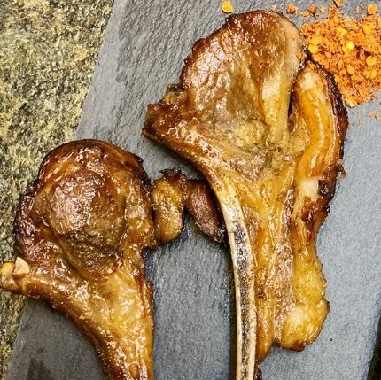

烤箱羊排 ★ Ovencooked Lamb Chop
 2 servings
2 servings 3 hours 30 minutes
3 hours 30 minutes-
 Xiachufang
Xiachufang
 Meat
Meat Spicy
Spicy Umami
Umami
香嫩烤箱羊排

- 4 块 羊排
- 半 个 洋葱
- 8 瓣 大蒜
准备带骨羊排，切好洗净备用。取洋葱切成小碎块，大蒜切片。
- 小半 勺 盐
- 小半 勺 白砂糖
- 少许 生抽
- 少许 老抽
- 小半 勺 白胡椒粉
- 少许 蚝油
把羊排，洋葱块，蒜片，盐，白砂糖，生抽，老抽，白胡椒粉，蚝油，搅拌均匀后密封，搁置冰箱至少两小时以上，建议半天左右。
- 一 层 食用油
- 适量 孜然粉
- 适量 辣椒粉
取烤盘铺锡纸(有土豆胡萝卜可放置板底)，然后铺上已经腌制好的羊排洋葱。羊排表面要刷食用油，撒孜然粉，撒辣椒粉，随后再盖一层锡纸在羊排上面。
- -—–
烤箱预热200C/400F，烤30分钟，去掉上层锡纸，再烤制15-20分钟，倒掉多余的水。羊排翻面，再涂油，撒孜然粉和辣椒粉，再烤制15-20分钟。
- -—–
如果羊排骨头容易焦，可以在去除上层锡纸后，给骨头专门包一层锡纸。
- -—–
可以根据羊排成色，适量调整烤制时间，出锅即可食用。